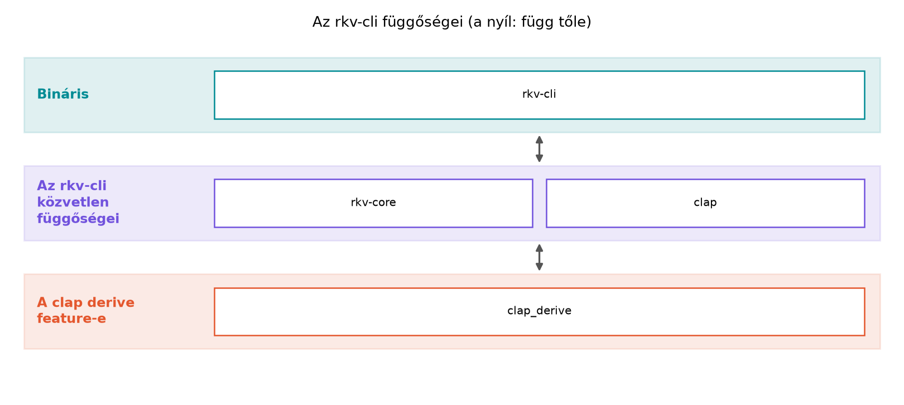

Egy C++-projektben a külső függőség többnyire három dologból áll:
include-útvonalak, linker-kapcsolók és platformfüggő binárisok. A vcpkg,
Conan vagy a CMake FetchContent megoldja a letöltést, de a
build-rendszer továbbra is a te felelősséged marad: melyik fejléc,
melyik könyvtárfájl, melyik ABI-verzió kerüljön a parancssorba. Az is
gyakori, hogy ugyanannak a könyvtárnak két verziója él a gépen, és a
hibás find_package csendben a rosszat választja.
A Rust ezt a problémát a Cargo manifestben rendezi: a
Cargo.toml deklarálja a függőséget, a verziómegkötést, a
fordítási lehetőségeket (feature-ök) és a Cargo gondoskodik a
letöltésről, a tranzitív függőségek feloldásáról és a linkelésről. A cél
nem az, hogy mindent „varázslatosan” kezeljen, hanem hogy a függőségi fa
reprodukálható és ellenőrizhető
legyen.
Definíció. A Cargo-manifest
(Cargo.toml) a crate leíró állománya; a
[dependencies] szekció a normál, a
[dev-dependencies] a tesztekhez és példákhoz, a
[build-dependencies] a build scripthez szükséges
függőségeket sorolja fel.
Definíció. A szemantikus verziózás (semver)
MAJOR.MINOR.PATCH alakú. A Cargo alapértelmezett
verziómegkötése a caret (^), ami a bal szélső nem nulla
komponenst tartja meg: ^1.2.3 jelentése
>=1.2.3, <2.0.0, ^0.2.3 jelentése
>=0.2.3, <0.3.0. A Cargo-ban a jel nélküli
1.2.3 nem pontos rögzítés: ugyanaz, mint a
^1.2.3, tehát >=1.2.3, <2.0.0. Pontosan
egy kiadást az egyenlőségjeles =1.2.3 enged meg. A
* bármely verziót elfogad – ezt kerüld, mert nem
reprodukálható buildhez vezet. A manifest követelménye és a
Cargo.lock két különböző dolog: a manifest a megengedett
tartományt adja meg, a lockfájl pedig azt a konkrét verziót
rögzíti, amelyet a feloldás ebből a tartományból kiválasztott (például
^1.2.3 mellett 1.4.0-t). A reprodukálható
buildet a commitolt Cargo.lock adja, nem az =
megkötés; az =-t csak indokolt esetben, például egy ismert
hibás kiadás kizárására használjuk.
Definíció. A feature opcionális, additív fordítási
lehetőség; a crate-ek [features] szekcióban hivatkozhatnak
más feature-ökre vagy opcionális függőségekre. Egy opcionális függőség
akkor válik elérhetővé, ha optional = true jelölést kap, és
egy feature bekapcsolja. Egy crate default feature-je
azoknak a feature-öknek a listája, amelyek akkor is bekapcsolnak, ha a
függőség deklarálásakor semmit sem kérünk (például a std).
A default-features = false ezt a listát nem veszi
figyelembe, ilyenkor csak az explicit features = [...]
felsoroltak kerülnek be — a saját függőségi deklarációnkra
nézve. A Cargo azonban a gráfban a feature-ket egyesíti
(feature unification): ha egy másik függő ugyanahhoz a crate-hez további
feature-t, akár a default-ot vagy a std-et is
kéri, az bekerül; a no_std kompatibilitás tehát egyetlen
default-features = false beállításból nem következik. Az
explicit feature tehát additív kérés (a clap
derive feature-je nem része a clap default
készletének, ezért kérni kell); a default-features = false
pedig kivonás (az alapértelmezett készlet nélkül indulunk).
Szabály. A Cargo.lock a feloldott függőségek
pontos verzióit tárolja. A Cargo FAQ jelenlegi ajánlása
szerint minden projekt lockfájlját érdemes verziókezelésbe tenni
(alkalmazásnál és könyvtárnál egyaránt), mert így a saját fejlesztői és
CI-build reprodukálható. Egy közzétett könyvtár lockfájlját a fogyasztó
nem használja: ő a saját gráfját oldja fel. Az rkv workspace egyetlen, a
gyökérben lévő Cargo.lock-ot használ.
Szabály. A függőségi higiénia része a fa és a
biztonsági állapot ellenőrzése: cargo tree a
megszűnt/duplikált verziókat, cargo audit az ismert
sebezhetőségeket, cargo deny a licenceket és a nemkívánatos
függőségeket mutatja. Ez utóbbi kettő külön telepítendő eszköz.
C++-ban egy CLI-argumentum feldolgozása gyakran kézi
argc/argv-járás vagy getopt; a
függőséget a build-rendszer külön kezeli:
// C++: CMake FetchContent + getopt (rövidített vázlat)
#include <getopt.h>
#include <string>
#include <vector>
int main(int argc, char** argv) {
std::string key, value;
int opt;
while ((opt = getopt(argc, argv, "k:v:")) != -1) {
if (opt == 'k') key = optarg;
else if (opt == 'v') value = optarg;
}
// ellenőrzés, hibaüzenet, súgó kézzel...
}A megfelelő Rust-kód a clap derive API-jával:
use clap::{Parser, Subcommand};
#[derive(Parser)]
#[command(name = "rkv-cli", version, about = "rkv parancssori kliens")]
struct Cli {
#[command(subcommand)]
command: Command,
}
#[derive(Subcommand)]
enum Command {
/// Kulcs lekérdezése
Get { key: String },
/// Kulcs–érték beállítása
Set { key: String, value: String },
/// Kulcs törlése
Del { key: String },
/// Kulcsok listázása opcionális prefixszel
List { prefix: Option<String> },
}
fn main() {
let cli = Cli::parse();
match cli.command {
Command::Get { key } => println!("GET {}", key),
Command::Set { key, value } => println!("SET {} {}", key, value),
Command::Del { key } => println!("DEL {}", key),
Command::List { prefix } => match prefix {
Some(p) => println!("LIST {}", p),
None => println!("LIST"),
},
}
}A különbség: a Rust-verzió a Cargo.toml egyetlen
bejegyzéséből húzza be a clap-ot, a fordítás során a Cargo feloldja a
tranzitív függőségeket, a #[derive] makró pedig a típusból
generálja a parancssori elemzőt, a hibaüzeneteket és a súgót. Nincs
külön include-útvonal, nincs linker-flag, nincs platformfüggő
.lib/.so kézi kezelés.
Munkakönyvtár: ~/rust-labor/rkv/ (a
workspace gyökere). A kiinduló állapot a Modulok és
láthatóság: header nélküli világ ellenőrzési pontja. A labor célja,
hogy az rkv-cli kézzel írt argumentumkezelését a clap
váltsa fel, a parancsok végrehajtása pedig továbbra is az
rkv-core Store-ján történjen.
A workspace gyökér Cargo.toml-ja az
rkv mintaprojekt indítása: Cargo-workspace és első CLI óta
változatlan, két taggal:
[workspace]
resolver = "3"
members = [
"rkv-core",
"rkv-cli",
]Az rkv-server tag még nem létezik: a Az rkv hálózati szerver: TCP, protokoll, kecses
leállás alfejezet hozza létre cargo new rkv-server
paranccsal, és csak akkor kerül a members listába. Egy nem
létező tag felvétele már a workspace betöltését is meghiúsítaná („failed
to load manifest for workspace member”).
Az rkv-cli/src/main.rs a Mintaillesztés: match, if let, let else és a minták
alfejezetben írt változat: a parse_key,
parse_command és execute függvény, valamint a
main, amely az argumentumokat egy protokollsorrá fűzi
össze. A cargo test -p rkv-cli 2 sikeres tesztet
futtat.
Ha eltértél a könyvtől. Ha egy opcionális feladat
(például a Mintaillesztés: match, if let, let else
és a minták PING bővítése vagy a Modulok és láthatóság: header nélküli világ
parse függvénye) a fájljaidat megváltoztatta, két út van:
vagy állítsd vissza őket a legutóbbi ellenőrzési pont állapotára, vagy
tartsd meg a bővítést, és a lenti kódban kezeld az új elemet is (a
fordító minden kimaradó match-ágat jelez). A könyv kódja
mindig az ellenőrzési pontok állapotából indul.
Kódblokk — fájl: rkv-cli/Cargo.toml · művelet:
teljes csere · ellenőrzés: cargo build -p rkv-cli
[package]
name = "rkv-cli"
version = "0.1.0"
edition = "2024"
rust-version = "1.89"
[dependencies]
rkv-core = { path = "../rkv-core" }
clap = { version = "4", features = ["derive"] }A version = "4" caret-megkötés, tehát bármely
4.x.y elfogadott, de az 5-ös főverzió nem. A
derive feature engedélyezi a #[derive(Parser)]
makrót; e nélkül a clap csak a builder API-t kínálná.
A clap saját Command-szerű enumot vár a
részparancsokhoz. Hogy ne ütközzön az
rkv_core::Command-dal, a clap-os enum neve
CliCommand. A clap a parancssor szerkezetét
ellenőrzi (melyik részparancs, hány argumentum); a kulcsok és értékek
tartalmát továbbra is a protokoll nyelvtana dönti el, ezért a
felépített parancsot a meglévő parse_command-dal
visszaellenőrizzük. Így a nyelvtan egyetlen helyen él.
Kódblokk — fájl: rkv-cli/src/main.rs · művelet:
beillesztés és csere: a use sorok és a main
cseréje, a parse_key, parse_command,
execute függvény és a tesztmodul változatlan · ellenőrzés:
cargo test -p rkv-cli → 2 sikeres teszt
use clap::{Parser, Subcommand};
use rkv_core::{Command, Store};
/// rkv parancssori kliens
#[derive(Parser)]
#[command(name = "rkv-cli", version, about)]
struct Cli {
#[command(subcommand)]
command: CliCommand,
}
#[derive(Subcommand)]
enum CliCommand {
/// Kulcs lekérdezése
Get { key: String },
/// Kulcs–érték beállítása
Set { key: String, value: String },
/// Kulcs törlése
Del { key: String },
/// Kulcs–érték párok listázása opcionális prefixszel
List { prefix: Option<String> },
}
// ... parse_key, parse_command és execute változatlanul (r009) ...
fn main() {
let cli = Cli::parse();
let command = match cli.command {
CliCommand::Get { key } => Command::Get(key),
CliCommand::Set { key, value } => Command::Set(key, value),
CliCommand::Del { key } => Command::Delete(key),
CliCommand::List { prefix } => Command::List(prefix),
};
// A protokoll nyelvtana szerinti ellenőrzés: ugyanaz a parser dönt,
// mint a protokollsorok esetén.
let command = match parse_command(&command.to_line()) {
Ok(command) => command,
Err(e) => {
eprintln!("ERR {e}");
std::process::exit(1);
}
};
let mut store = Store::new();
println!("{}", execute(&mut store, command));
}A #[command(version, about)] automatikusan hozzáadja a
--version és --help kapcsolókat; az
about szövegét a Cli feletti ///
komment adja, a részparancsok súgóját pedig a variánsok feletti
/// kommentek. A mezők (key,
value, prefix) attribútum nélkül
pozicionális argumentumok: get foo, nem
get --key foo. Név szerinti kapcsolóhoz a mezőre
#[arg(long)] kellene.
cd ~/rust-labor/rkv
cargo run -p rkv-cli -- set name "Alice Smith"
cargo run -p rkv-cli -- get foo
cargo run -p rkv-cli -- get "a b"Várt kimenet (az utolsó sor a standard hibakimenetre kerül, kilépési kód 1):
OK
NOTFOUND
ERR invalid key: "a b"A get foo azért NOTFOUND, mert minden
futtatás új, üres tárolóval indul (Az rkv
mintaprojekt indítása: Cargo-workspace és első CLI); a
perzisztenciát az I/O és szerializáció: fájlok,
pufferelés, serde adja hozzá. Próbáljuk ki a súgót:
cargo run -p rkv-cli -- --helpVárt kimenet (clap 4, Rust 1.99.1):
rkv parancssori kliens
Usage: rkv-cli <COMMAND>
Commands:
get Kulcs lekérdezése
set Kulcs–érték beállítása
del Kulcs törlése
list Kulcs–érték párok listázása opcionális prefixszel
help Print this message or the help of the given subcommand(s)
Options:
-h, --help Print help
-V, --version Print versionNézzük meg a feloldott függőségi fát:
cargo tree -p rkv-cliKözvetlen függőségek (valós kimenet, --depth 1; az
anyhow az 5.2 mérföldkövének manifestjében még nincs, a Saját hibatípusok: enum-hibák, thiserror, anyhow
vezeti be, ezért a kimenet a labor végállapotát mutatja; az 5.2
pontos mérföldkövénél csak a clap és az
rkv-core jelenik meg):
cargo tree -p rkv-cli --depth 1rkv-cli v0.1.0 (~/rust-labor/rkv/rkv-cli)
├── anyhow v1.0.104
├── clap v4.6.7
└── rkv-core v0.1.0 (~/rust-labor/rkv/rkv-core)A kérések feature-szinten (-e features): melyik
feature-t ki kéri.
cargo tree -p rkv-cli -e features --depth 1rkv-cli v0.1.0 (~/rust-labor/rkv/rkv-cli)
├── anyhow feature "default"
├── clap feature "default"
├── clap feature "derive"
└── rkv-core feature "default"Az rkv-cli tehát a clap alapértelmezett
készletét és az explicit derive feature-t kéri;
ugyanezt fordítva is megnézhetjük:
cargo tree -p rkv-cli -e features -i clap megmutatja, mely
feature-t mi húzza be (a derive kérőjeként az
rkv-cli jelenik meg).
A clap_derive proc-macro crate fordítási időben bővíti
ki a #[derive(Parser)] annotációt.
A cargo audit és a cargo deny nem része a
Rust disztribúciónak. A könyv a cargo-deny
0.20.2-es kiadásával dolgozott; a verziót rögzítve
telepítjük:
cargo install cargo-deny --version 0.20.2 --locked
cargo deny --version # cargo-deny 0.20.2Minden workspace-tagra (az rkv-core,
rkv-cli, és a később létrehozott rkv-server,
rkv-ffi, rkv-cxx, rkv-derive
manifestjére is) érvényes: ahol egy későbbi lépés teljes
Cargo.toml-cserét ír elő, és a blokk a license
és publish = false sorokat nem tartalmazza, a
[package] táblában ezeket meg kell tartani vagy vissza kell
adni, különben a cargo deny check licenses elbukik.
A cargo deny licencet kér minden crate-től, ezért a
saját workspace-tagjainknak is kell license mező, és
publish = false jelzi, hogy nem kerülnek a crates.io-ra
(különben a path-függőségeket “wildcard”-nak minősítené). A tagok
Cargo.toml-jának [package] táblájába vegyük
fel:
Kódblokk — fájl: rkv-core/Cargo.toml,
rkv-cli/Cargo.toml (és a többi tag) · művelet: két új sor a
[package] táblában · ellenőrzés:
cargo deny check licenses
license = "MIT OR Apache-2.0"
publish = falseA minimális, magyarázott konfiguráció a workspace gyökerében:
Kódblokk — fájl: deny.toml · művelet: új fájl
(workspace gyökér) · ellenőrzés:
cargo deny check licenses bans →
bans ok, licenses ok
# Minimális cargo-deny konfiguráció az rkv workspace-hez (cargo-deny 0.20.2)
[graph]
all-features = true # az összes feature-t vizsgálja
[licenses]
# Csak a függőségi fában ténylegesen előforduló, engedett licencek (cargo deny list).
allow = ["MIT", "Apache-2.0", "Apache-2.0 WITH LLVM-exception", "Unicode-3.0", "Unlicense", "Zlib"]
[bans]
multiple-versions = "warn" # ugyanaz a crate több verzióban: figyelmeztetés
wildcards = "deny" # "*" verziómegkötés tiltott
allow-wildcard-paths = true # a workspace-tagok path-függősége nem számít wildcardnak
deny = [
{ crate = "openssl" }, # példa tiltott crate; az rkv nem használja
]Futtatás a workspace gyökeréből:
cargo deny check licenses bans advisoriesEllenőrzött eredmény a labor workspace-én:
bans ok, licenses ok, advisories ok (az
advisory adatbázist a cargo deny hálózatról tölti le). A
bans ellenőrzés warn szinten jelzi a duplikált
verziókat (például a syn 2 és 3), de nem bukik meg tőlük. A
licenses szekció allow listája a
cargo deny list kimenetéből készült: pontosan azokat a
licenceket tartalmazza, amelyek a fában előfordulnak. A
cargo audit ugyanazt az advisory adatbázist használja
önállóan: cargo install cargo-audit --locked, majd
cargo audit.
A rétegábra a működő rendszer függőségi viszonyait mutatja:

A nyilak a függőség irányát mutatják. Az rkv-cli
Cargo.toml-ja: rkv-core (path) és
clap (features = ["derive"]); a
clap a derive feature-rel a
clap_derive crate-et is behúzza. Az rkv-core
nem függ a clap-től.
Az ábra szavakkal: a rkv-cli a workspace-en belül a
rkv-core-ra (path-függőség) és a külső clap-ra épül. A
clap a clap_derive proc-macro crate-tel
fordul, ami a derive feature bekapcsolásának
következménye.
Ellenőrzési pont. A workspace két taggal
(rkv-core, rkv-cli) hibátlanul fordul; az
rkv-cli clap-alapú részparancsokat fogad (get,
set, del, list), és a
végrehajtást az rkv-core Store-ja végzi. A
cargo test --workspace 6 tesztje (4 az
rkv-core-ban, 2 az rkv-cli-ben) sikeres.
Továbbvitt eredmény. Ez a Cli típus és
a CliCommand enum a rkv-cli/src/main.rs
fájlban a clap-alapú parancssori felület alapja. A Hibakezelés: saját hibatípusok alfejezetben a
Command feldolgozás hibatípusra köt majd rá, a Záróprojekt: az rkv teljes rendszerként
alfejezetben a CLI lokális Store/FileStore
klienseként marad; a hálózati szerverhez az nc és a
C++-kliens csatlakozik, saját Rust TCP-kliens nem készül.
clap = "*"
azt mondja a Cargo-nak, hogy bármely verzió megfelel. Egy féléves
projektben már nem reprodukálható a build, mert az új kiadás API-t
törhet. Mindig adj meg legalább főverziós caret-megkötést, és a
Cargo.lock-ot commitold.default-features = false félreértése
no_std környezetben. Sok crate
default feature-je a std-et is bekapcsolja,
ami no_std célra (például
thumbv7em-none-eabihf) fordítási hibát okoz. A
serde jó példa: a std-et a
default készlet tartalmazza, a derive viszont
explicit feature. Ellenőrzött viselkedés:
serde = { version = "1", default-features = false, features = ["derive"] }
lefordul a no_std célra, a
serde = { version = "1", features = ["derive"] } (az
alapértelmezett készlettel) viszont
E0463: can't find crate for std hibával áll meg. Fontos,
hogy a default-features = false önmagában nem “kapcsolja ki
a std-et általában”, csak azokat a feature-öket hagyja ki,
amelyeket az adott crate a default listájában felsorol; a
clap derive feature-je például soha nem volt a
default része, ezért mindig explicit kell
(features = ["derive"]).cargo update félreértése. Az
cargo update az összes függőséget frissíti a megengedett
tartományon belül; ha csak egy crate-et akarsz, a
cargo update -p <crate> a pontos eszköz. A
Cargo.lock törlése nem „megjavítja”, hanem megszünteti a
reprodukálhatóságot.Adott a Cargo.toml részlet: foo = "0.3.8".
Mely verziókat engedélyezi a Cargo? (Válaszd ki a helyeset, és
indokold.)
>=0.3.8, <1.0.0>=0.3.8, <0.4.0=0.3.8Írd át a következő C++-részletet idiomatikus Rustra clap derive
API-val. A program egyetlen --count N opciót vár,
alapértelmezett értéke 1, és annyiszor írja ki a hello
szót.
#include <cstdlib>
#include <iostream>
#include <string>
int main(int argc, char** argv) {
int count = 1;
for (int i = 1; i < argc; ++i) {
std::string arg = argv[i];
if (arg == "--count" && i + 1 < argc) {
count = std::atoi(argv[++i]);
}
}
for (int i = 0; i < count; ++i) std::cout << "hello\n";
}Bővítsd a rkv-cli/src/main.rs Cli típusát
egy --verbose kapcsolóval, amely -v rövid
alakkal is elérhető, és ha be van kapcsolva, a program a
main elején írja ki:
debug: verbose mód bekapcsolva. A kapcsolót úgy add hozzá,
hogy az minden alkalmazott parancsnál elérhető legyen (globális
opció).
Az alábbi Cargo.toml részlet nem fordul. Mi a hiba, és
hogyan javítanád?
[dependencies]
clap = { version = "4", features = "derive" }A helyes válasz: 2. A 0.3.8
caret-megkötésben a bal szélső nem nulla komponens a 0
utáni 3, tehát >=0.3.8, <0.4.0.
use clap::Parser;
#[derive(Parser)]
struct Cli {
/// Ismétlések száma
#[arg(short, long, default_value_t = 1)]
count: u32,
}
fn main() {
let cli = Cli::parse();
for _ in 0..cli.count {
println!("hello");
}
}A default_value_t használata a u32 típus
miatt biztonságos; a #[arg(short, long)] a -c
és --count kapcsolókat generálja. A
for _ in 0..cli.count a Rust tartományalapú iterációja.
A Cli típus kiegészítve:
use clap::{Parser, Subcommand};
#[derive(Parser)]
#[command(name = "rkv-cli", version, about = "rkv parancssori kliens")]
struct Cli {
/// Verbose kiírás
#[arg(short, long, global = true)]
verbose: bool,
#[command(subcommand)]
command: Command,
}
#[derive(Subcommand)]
enum Command {
Get { key: String },
Set { key: String, value: String },
Del { key: String },
List { prefix: Option<String> },
}
fn main() {
let cli = Cli::parse();
if cli.verbose {
println!("debug: verbose mód bekapcsolva");
}
match cli.command {
Command::Get { key } => println!("GET {}", key),
Command::Set { key, value } => println!("SET {} {}", key, value),
Command::Del { key } => println!("DEL {}", key),
Command::List { prefix } => match prefix {
Some(p) => println!("LIST {}", p),
None => println!("LIST"),
},
}
}A global = true azt jelenti, hogy a kapcsolót nemcsak a
főparancs után, hanem az alkalmazott parancs után is megadhatod
(rkv-cli get --verbose key).
A features mezőnek lista típusúnak kell
lennie, nem stringnek. A hibás sor:
features = "derive"Helyesen:
features = ["derive"]A Cargo manifestben a [dependencies] szekció deklarálja
a külső crate-eket, a caret (^) az alapértelmezett
semver-megkötés. A feature-ök opcionális, additív fordítási lehetőségek;
a default-features = false letiltja az alapértelmezett
készletet. A Cargo.lock commitolandó a saját build
reprodukálhatósága miatt (a fogyasztók feloldását egy könyvtár
lockfájlja nem befolyásolja). A cargo tree,
cargo audit és cargo deny a függőségi fa, a
sebezhetőségek és a licencek ellenőrzését szolgálják. A laborban a
rkv-cli crate-hez vettünk fel clap-ot
(version = "4", features = ["derive"]), és
létrehoztuk a Cli típust és a Command enumot a
rkv-cli/src/main.rs fájlban. Ez a Továbbvitt
eredmény a Hibakezelés: saját
hibatípusok és a Záróprojekt: az rkv teljes
rendszerként alfejezetekben használatos.
#[arg]
attribútumok a docs.rs-en ellenőrizendők.cargo audit és a cargo deny
parancskészlete verziófüggő; a bemutatott hívások a telepítés utáni
--help kimenetében is megtalálhatók.